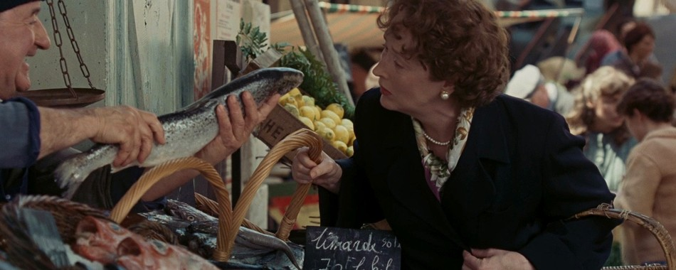
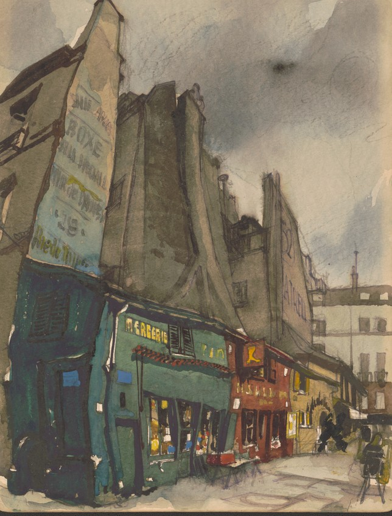
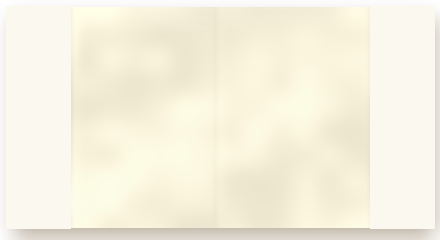

81, rue de l'Université, Paris
Paris, 1949
Where it all began: a lunch in Rouen, a cooking class full of men in white, and a mountain of onions.

Julia at the fish market. The sole, 70 francs the kilo.
Julia's tableIn old francs
Sole meunière70 fr
Whole sole dusted in flour, browned in butter, lemon, parsley.
Rouen, the first lunch. Paul ordered.
Soupe à l'oignon45 fr
Onions cooked slow, beef broth, toast, melted cheese.
A mountain of onions, chopped by hand.
Gougères30 fr
Warm Gruyère choux puffs, a grating of nutmeg.
A dinner from the book
Julie & Julia
Paris, 1949 and Queens, 2002


BEURRE DOUX
Butter
You can never have
too much.
too much.
The Left Bank, painted in 1949, the year Julia went to cooking school.
365 days. 524 recipes.
One tiny kitchen in Queens. Bon appétit!
L'École des Trois Gourmandes. Watercolor, V. A. Lundy.